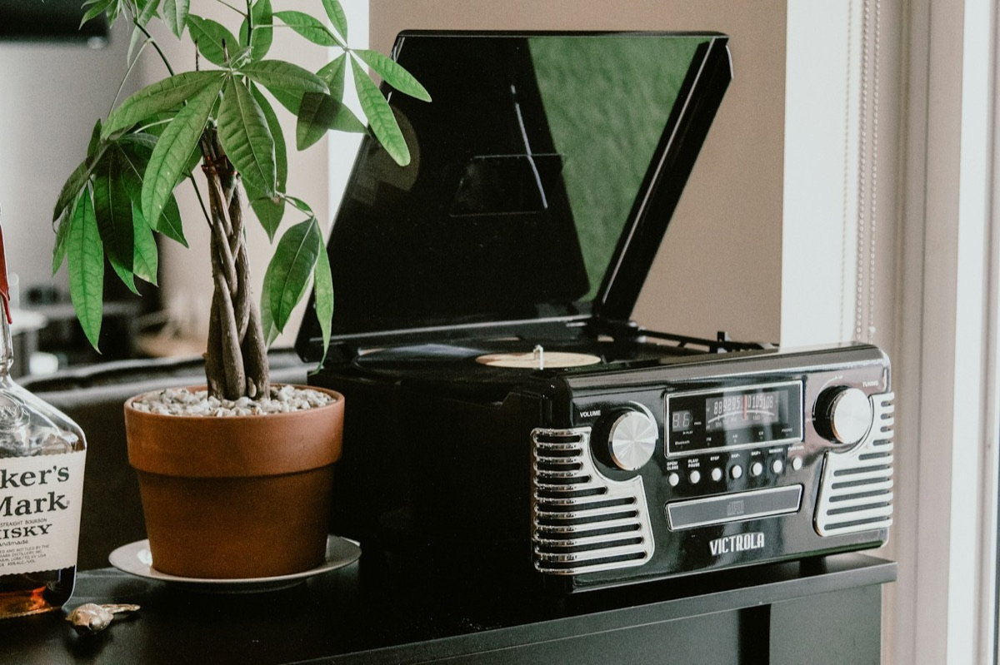
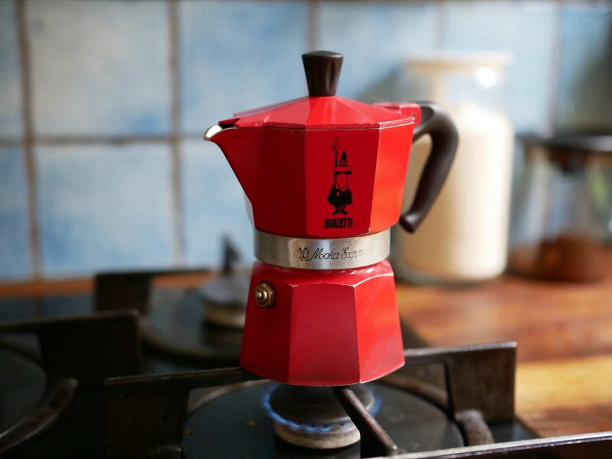
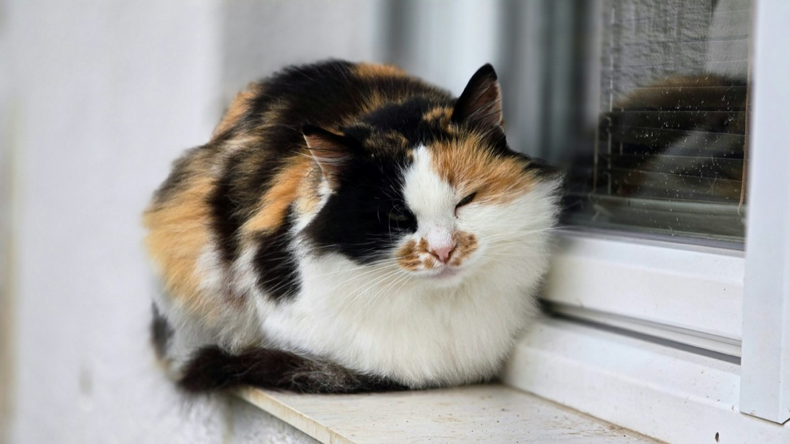

Ferienwohnung · 4. Stock · ohne Lift · Zürich-ish
Eine Wohnung für Leute, die beim Check-in zuerst die Plattensammlung anschauen.
48 m², ein Dachfenster, durch das man genau einen Stern sieht, und eine grüne Tür, die man etwas anheben muss. Kein Design-Hotel. Eher ein Lieblingspulli mit Schlüssel.

die grüne Tür, Oktober
Beweisfotos
Alles echt. Fast alles.



Klick auf ein Foto für die Grossansicht.
Die Wohnung
Kurz gesagt: klein, warm, etwas schief.
Wohnzimmer
Ein Sofa, das nach Bibliothek riecht. Ein Plattenspieler von 1979. Eine Leselampe mit genau drei Helligkeitsstufen: Kerze, Krimi und Verhör.
Schlafzimmer
Doppelbett unter der Dachschräge. Wer über 1.85 m ist, lernt hier Demut. Das Dachfenster lässt sich öffnen, der Stern bleibt.
Küche
Zwei Herdplatten, eine Bialetti, ein Wasserkocher, der in Fis pfeift. Gewürzregal sortiert nach Gefühl, nicht nach Alphabet.
Bad
Dusche mit gutem Wasserdruck (wichtig, wir wissen es). Handtücher in einer Farbe, die der Hersteller „Hafernebel“ nennt.
Inventar
Die Dinge, nach denen niemand fragt, die aber alle bemerken.
- Schallplatten37 Stück
- davon Jazz, den niemand kennt11
- Brettspiele mit allen Teilen3 von 4
- Zimmerpflanze „Herbert“ (giessen: Dienstag)1
- Taschenbücher mit Eselsohrenca. 60
- Kaffeetassen, alle verschieden9
- Regenschirm, leicht verbogen1
- Fernseherbewusst 0
Der Vormieter hat die Wand im Flur „Salbei“ gestrichen. Es ist eher Pistazie.
Extras
Kleine Dienste für deinen Aufenthalt. Werden gerade gebaut.
Gertrud-Ersatz
Die Nachbarskatze kommt nur um 18:40 Uhr. Für alle anderen Zeiten: eine zufällige Katze.
Bitcoin-Kurs
Wir akzeptieren keine Bitcoins. Aber falls du beim Frühstück flexen willst: der aktuelle Kurs in USD und CHF.
Dachfenster-Wetter
Ob du das Fenster heute offen lassen kannst. Zürich, Höchst- und Tiefstwert, Niederschlag.
Strom für dein Auto
Die fünf nächsten Ladestationen. Für den Fall, dass du nicht mit dem Velo kommst (verständlich, 84 Stufen).
Standard: rund um Winterthur
- Ladestation ...
- Ladestation ...
- Ladestation ...
Wo ist die grüne Tür?
Kartenausschnitt mit der Wohnung in der Mitte. Die Tür selbst sieht man leider nicht.
Tipp: Klick auf eine Ladestation zeigt sie hier auf der Karte.
Hausregeln
Wenige, aber ernst gemeint.
- Die grüne Tür beim Schliessen leicht anheben. Sie dankt es dir.
- Platten zurück in die Hülle, Hülle zurück ins Regal, Regal bleibt, wo es ist.
- Gertrud darf rein. Gertrud darf nicht gefüttert werden. Gertrud wird so tun, als wüsstest du das nicht.
- Ab 22 Uhr leise. Frau Huber im 3. Stock hört alles, ausser die Türklingel.
- Herbert am Dienstag giessen. Nicht am Mittwoch. Herbert merkt das.
Preise
CHF 118.– pro Nacht
Mindestens 2 Nächte. Ab 7 Nächten gibt es eine Platte geschenkt, du darfst sie aussuchen (fast alle).
Endreinigung CHF 40.–, Bettwäsche und Hafernebel-Handtücher inklusive.
Anfrage
Das Formular kommt bald. Bis dahin freut sich die Tür auf dich.